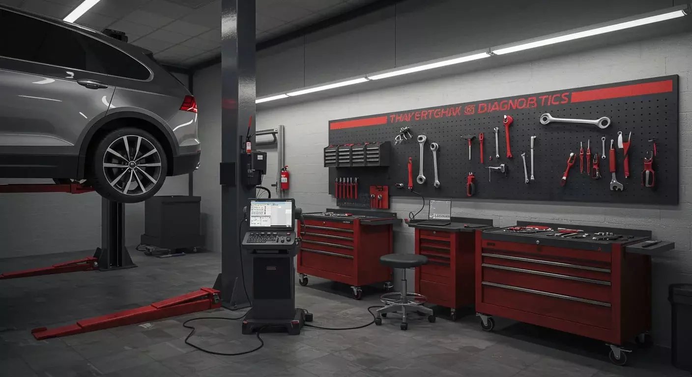

Oficina Automotiva
Rafa Auto Tech
Cuidando do seu carro com qualidade, segurança e confiança.
Nossos Serviços
Manutenção completa para manter seu veículo sempre em perfeito estado.
🔧 Manutenção Preventiva
Revisões e manutenção preventiva para evitar problemas futuros no seu veículo.
🛑 Freios
Troca de pastilhas, discos, lonas e revisão completa do sistema de freios.
🛢️ Troca de Óleo
Troca de óleo e filtros para garantir o bom funcionamento e a durabilidade do motor.
⚙️ Motor
Diagnóstico e manutenção para problemas relacionados ao motor do veículo.
💻 Diagnóstico
Diagnóstico eletrônico para identificar falhas e problemas no veículo.
🔋 Bateria
Teste, diagnóstico e substituição da bateria do veículo.
Nosso trabalho



Sobre a Rafa Auto Tech
Na Rafa Auto Tech, trabalhamos para oferecer serviços automotivos com qualidade, segurança e transparência.
Nosso objetivo é cuidar do seu veículo para que você possa dirigir com tranquilidade e confiança.
Precisa de Manutenção?
Saiba onde nos encontrar.